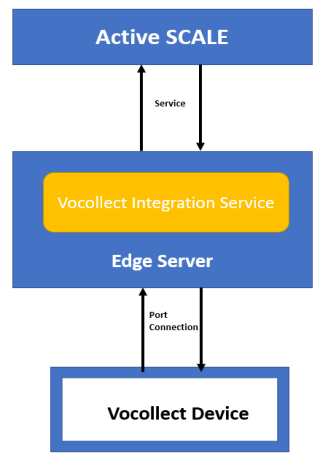

Before you can use a Vocollect device to pick product in your warehouse, you will first need to address configurations in both SCALE and the Vocollect application.
The following is discussed in this topic:
Vocollect Hardware & Application
Vocollect Terminology Descriptions
Miscellaneous SCALE Vocollect Setup Steps
Vocollect Comma/Apostrophe Field List
Several components outside SCALE are required to pick using Vocollect voice technology. Please refer to the software/hardware documentation if you have specific questions about the setup or installation of the Vocollect application or device:
The following table contains the terminology differences between SCALE and Vocollect.
|
SCALE Term
|
Vocollect Equivalent Term
|
|
Equipment Type |
Vehicle Type |
|
Reason Code |
Exception Code |
|
Putaway |
Deliver / Delivery |
|
User Name |
Operator |
|
Work Type |
Break Type |
|
Work Unit |
Work ID |
The Vocollect device sends the request message to the edge server. The edge server process the request and in turn sends the request to Active SCALE. On receiving the request, Active SCALE process and send the response message back to edge server. The edge server receives the response and process using the Integration service. It will now communicate the response message to the Vocollect device to process the request. This complete one request - response cycle which is pictorially shown below

In addition to the SCALE Vocollect - specific configuration windows, several other configuration values in SCALE need to be addressed:
The following table contains parameters passed by SCALE to Vocollect that may contain commas or apostrophes. SCALE strips these characters from data before sending it to Vocollect.
|
SCALE Field
|
Vocollect Parameter
|
|
Vocollect Region Description |
Vocollect Region Description |
|
Work Type Description |
Break Type Description |
|
Container Type Description |
Container Type Description |
|
Item Description |
Item Description |
|
Reason Code Description |
Exception Code Description |
|
Lot |
Lot |
|
Warehouse |
Warehouse |
|
In addition, all the fields that accept non-numeric data |
|
- When picking into tote and picking into a shipping container with container created on-the-fly (not in the wave), you should both have the Container Type Field set to Variable Full Quantity Container and the Prompt Operator For Container ID Field set to Prompt.
- Currently, SCALE does not support the system creation of shipping containers (when picking into a shipping container) with containers created on-the-fly.
- If the target container is specified in the getpicks message and container type is set to Variable, to get the delivery message, we need to say Close Container.
- If the target container is specified in the getpicks message and container type is set to Variable, the Prompt for Container ID Field should be set to No. The terminal will only prompt for last two digits of the container ID.
- If no menu option comes and the device is stuck, we need to clear the terminal memory. Details can be found out in Vocollect hardware help, here are the procedures in brief:
The instructions for invalidating the flash on the terminal:
(1) Power off the terminal and connect it to the PC using a red serial cable
(2) Open HyperTerminal (Start | Programs | Accessories | Communications)
(3) Configure the port for the following settings:
(1) Bits per second: 57600 2. Data bits: 8 3. Parity: None
(4) Stop bits: 1 5. Flow control: none
(4) On the terminal, press and hold the plus, minus, and play/pause buttons until the LED turns a solid orange
(5) In the diagnostics menu, go to these options: